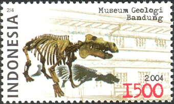

Masa Penjajahan Jepang[sunting | sunting sumber]
Sebagai akibat dari kekalahan pasukan Belanda dari pasukan Jepang pada perang dunia II,
keberadaan Dienst van den Mijnbouw berakhir. Letjen. H. Ter Poorten (Panglima Tentara Sekutu di
Hindia Belanda) atas nama Pemerintah Kolonial Belanda menyerahkan kekuasaan teritorial Indonesia
kepada Letjen. H. Imamura (Panglima Tentara Jepang) pada tahun 1942. Penyerahan itu dilakukan di
Kalijati, Subang. Dengan masuknya tentara Jepang ke Indonesia, Gedung Geologisch Laboratorium
berpindah kepengurusannya dan diberi nama KOGYO ZIMUSHO. Setahun kemudian, berganti nama menjadi
CHISHITSU CHOSACHO.
Selama masa pendudukan Jepang, pasukan Jepang mendidik dan melatih para pemuda Indonesia untuk menjadi:
PETA (Pembela Tanah Air) dan HEIHO (pasukan pembantu bala tentara Jepang pada Perang Dunia II). Laporan
hasil kegiatan pada masa itu tidak banyak yang ditemukan, karena banyak dokumen (termasuk laporan hasil
penyelidikan) yang dibumihanguskan tatkala pasukan Jepang mengalami kekalahan di mana-mana pada awal tahun 1945.
Masa Kemerdekaan

Setelah Indonesia merdeka pada tahun 1945, pengelolaan Museum Geologi berada dibawah Pusat Djawatan Tambang dan Geologi (PDTG/1945-1950). Pada tanggal 19 September 1945, pasukan sekutu pimpinan Amerika Serikat dan Inggris yang diboncengi oleh Netherlands Indiës Civil Administration (NICA) tiba di Indonesia. Mereka mendarat di Tanjungpriuk, Jakarta. Di Bandung, mereka berusaha menguasai kembali kantor PDTG yang sudah dikuasai oleh para pemerintah Indonesia. Tekanan yang dilancarkan oleh pasukan Belanda memaksa kantor PDTG dipindahkan ke Jl. Braga No. 3 dan No. 8, Bandung, pada tanggal 12 Desember 1945. Kepindahan kantor PDTG rupanya terdorong pula oleh gugurnya seorang pengemudi bernama Sakiman dalam rangka berjuang mempertahankan kantor PDTG. Pada waktu itu, Tentara Republik Indonesia Divisi III Siliwangi mendirikan Bagian Tambang, yang tenaganya diambil dari PDTG. Setelah kantor di Rembrandt Straat ditinggalkan oleh pegawai PDTG, pasukan Belanda mendirikan lagi kantor yang bernama Geologische Dienst ditempat yang sama.
Di mana-mana terjadi pertempuran. Maka, sejak Desember 1945 sampai dengan Desember 1949, yaitu selama 4 tahun berturut-turut, kantor PDTG terlunta-lunta berpindah-pindah dari satu tempat ke tempat lainnya.
Pemerintah Indonesia berusaha menyelamatkan dokumen-dokumen hasil penelitian geologi. Hal ini menyebabkan dokumen-dokumen tersebut harus berpindah tempat dari Bandung, ke Tasikmalaya, Solo, Magelang, Yogyakarta, dan baru kemudian, pada tahun 1950 dokumen-dokumen tersebut dapat dikembalikan ke Bandung.
Dalam usaha penyelamatan dokumen-dokumen tersebut, pada tanggal 7 Mei 1949, Kepala Pusat Jawatan Tambang dan Geologi, Arie Frederic Lasut, telah diculik dan dibunuh tentara Belanda. Ia telah gugur sebagai kusuma bangsa di Desa Pakem, Yogyakarta.